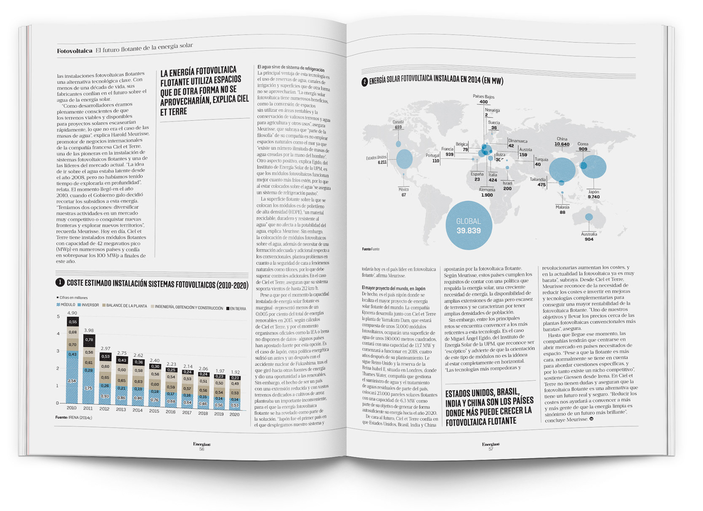

Floating Solar Energy
Editorial Infographic
Context
Infographic developed for an editorial feature on floating photovoltaic energy and its future potential. The goal was to explain how this emerging technology works and to present global installation data in a clear and engaging way.
Problem
The topic combines technical explanations with global statistics, making it complex to communicate to a general audience. The challenge was to simplify both the technological concept and the data without losing accuracy or clarity.
Solution
A clean editorial layout was designed, combining structured text with data visualization. The infographic integrates explanatory content with a global map showing installed photovoltaic capacity, allowing readers to quickly understand both the concept and its worldwide impact.
Design Contribution
The piece balances information density with readability through hierarchy, spacing, and color. Data visualization elements, such as proportional circles on the map and cost evolution charts, help translate complex data into intuitive visual insights.
Result
The infographic communicates both the technological concept and its global relevance in a concise and accessible format. It functions as both an informative article and a visual data reference.
